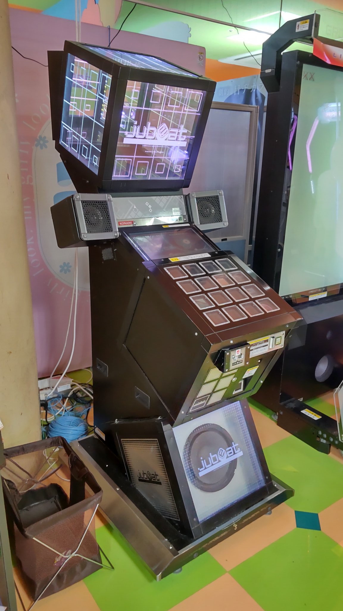

店舗情報
BEMANIシリーズ(主にjubeat)の設置店舗情報を載せようと思っています。他のwikiと違って個人の感想を含めています。情報提供はTwitterよりお願いします。余力があれば少しゲームの情報も載せるかもしれません。
当サイトは非公式です。当サイトに関して各店舗への連絡はお断りです。
近畿地方
京都府
GiGO MOMOテラス京都伏見
- 住所：京都府京都市伏見区桃山町山ノ下32京都SCビルAM棟2F
- 営業時間：10～22
- 料金：PASELI 100円
- 台数：1台(beyond the Ave.)
- 最寄駅：六地蔵(JR・地下鉄) ※京阪六地蔵の方は少し遠いです。
- 機器：jubeat・チュウニズム・maimai・オンゲキ
- 備考：
- MOMOテラス(イオンみたいな)と繋がっているので、MOMOを目指して行くとたどり着けます。
- maimaiやチュウニズムは混んでいるのに対して、こちらはかなり空いており、自分以外やってる人を見たことがありません。
- PASELIチャージ機がありません。現金チャージ派の方は注意しましょう。
- 後ろ側にmaimaiがあり、そちらの音が大きいので音が聞こえにくいです。イヤホンは使えません。
- 店舗名の設定が「滋賀県」「セガエイスクエア草津」となっています。
滋賀県
エースレーン近江八幡
- 住所：滋賀県近江八幡市出町736
- 営業時間：平日・日曜日・祝日 10:00～23:00 金曜日・土曜日・祝前日 10:00～深夜1時
- 料金(jubeat)：PASELI 100円
- 台数：1台(beyond the Ave.)
- 最寄駅：近江八幡
- 機器：jubeat・IIDX(1台)・ギタドラ(1台)・DDR・SOUND VOLTEX(1台)・オンゲキ・maimai・チュウニズム(?)
- 備考：
- パチンコやボーリング施設もあるので駐車場が混んでいます。但し、屋上は空いています。
- 公式サイトにはチュウニズムの記載がありますが、どこにあるのか分かりませんでした。